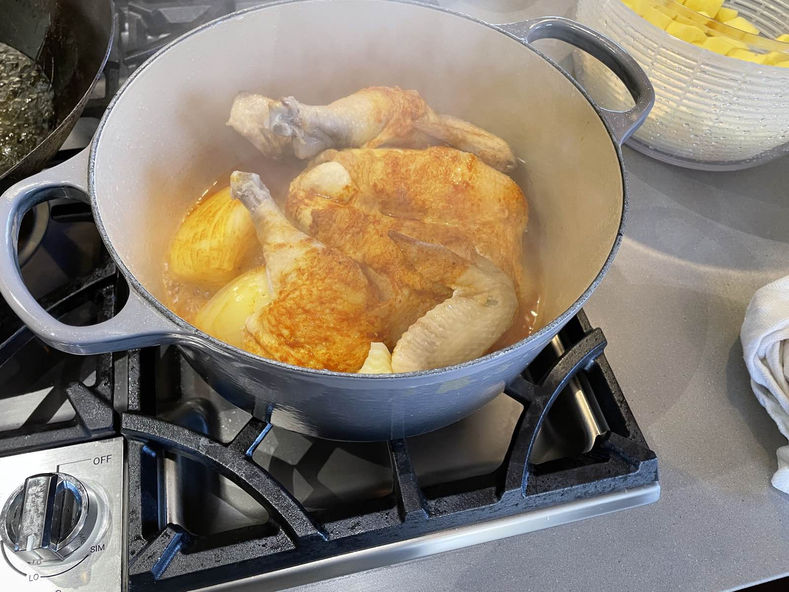
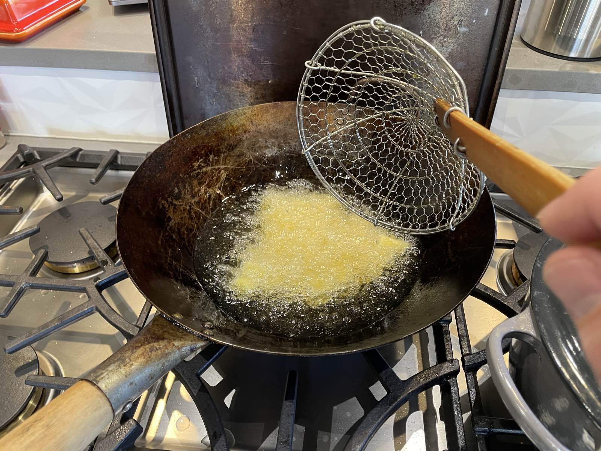
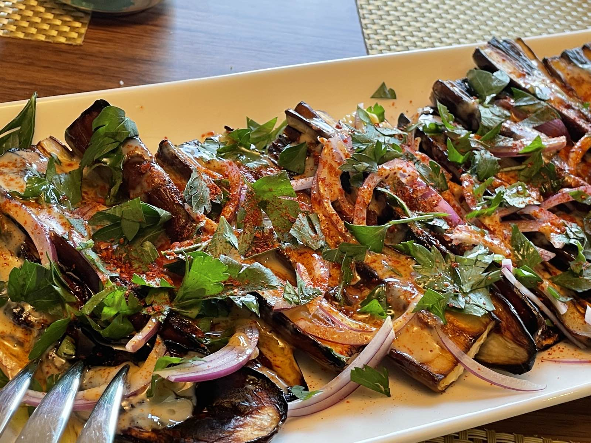

Chicken Sofrito & Charred Eggplant
This recipe caught my eye the other day when I was perusing cookbooks to try and figure out what to make for dinner this week: Chicken Sofrito, but like, not? I know sofrito as like the sautéed veggie base in Latinx/Spanish cooking, but like the name of this book is Jerusalem. (Although, the heavy Mediterranean influence on the food of the Levant, coupled with the fact the Muslims ruled Spain for a real long time, and like I can kind of see the cross-cultural influences of Spanish/Middle Eastern/North African cooking…)
ANYWAY, apparently in Israeli cooking (maybe more than Israeli cooking?) sofrito means that you’re cooking meat with a very small amount of fat/liquid. The world is a magical place friends.
The recipe was pretty simple: I removed the backbone from a small chicken (the smallest one I could find was 4.5lbs), and then removed the keel bone from it. You could probably just buy like a halved chicken or thighs or something, but like, a whole chicken is so much cheaper and you get the backbone to freeze and eat like an ice pop! (Mmmmmmm salmonella!) I then slowly browned it in my dutch oven over medium heat with some canola oil until it had gotten a nice toasty brown and most of the fat had rendered out from the skin. I took it out, added a quartered onion, and put the chicken back on, skin side up, rubbed down with some tumeric, paprika, salt, lemon juice and a tiny bit of sugar. Then the lid went on, the heat went to the very lowest my range would go and I went back to work.

After it had been in there for a bit I peeled and cubed up like 2 lbs of yukon gold potatoes. Probably too many potatoes, but like my last name is Kennedy so saying too many potatoes is the kind of thing that would make my grandfather rise from the grave and try to sand me to death with his scratch-ass 5 o’clock shadow. I also got like a head of garlic separated. The recipe said not to peel it, but they’re fucking wrong, so like, peel that fucking garlic or your partner will be pulling fried and braised (spoiler alert?) garlic skin from their mouth and asking you what the fuck is wrong with what you cooked. But like I said, fry the potatoes and garlic until they get some color on them.

Like many things in the kitchen, Kenji Lopez-Alt is right about frying in a wok. It’s the only way to go. There was no splatter to clean up, unlike last night’s katzu, which I did in a cast iron pan like a chump. Don’t be like me. Be smart.
After the garlic and potatoes were fried, I took the chicken out, put in the garlic and potatoes, and then the chicken back on, and then the lid and then let it slowly cook for another 30 minutes or so.
Meanwhile I cut some small skinny eggplants (these were Chinese according to the supermarket, but maybe they’re Italian? Or Japanese?) into thirds, and salted them decently and let them sit for 30 minutes. Then rinsed off the salt and pressed them dry on some kitchen towels. Then rubbed them with olive oil and put them under the broiler until they were black and charred. A little lemon juice, tahini, parsley and Aleppo chili powder sprinkled on top for fun.

When those were done (they were served at room temp), I pulled the chicken out of the pan and let it cook and then picked all the meat off the bones because god fucking forbid that anyone in my family realizes that meat comes on bones and I’m fucking done for. Given that I had shredded the meat, I stirred it back into the potato/garlic/onion sauce, and squeezed in another lemon. Then my kids ate a peanut butter and jelly and the other one had toast with jam and yogurt. At least I made the sandwich bread? Philistines, the whole fucking lot of them.
Ingredients:
- a whole fucking chicken
- ground tumeric
- paprika (smoke ’em if you got ’em)
- white sugar (I bet honey would be good here)
- an onion
- yukon gold potatoes
- garlic
- eggplant
- red onion
- tahini
- parsley
- aleppo pepper
- lemons